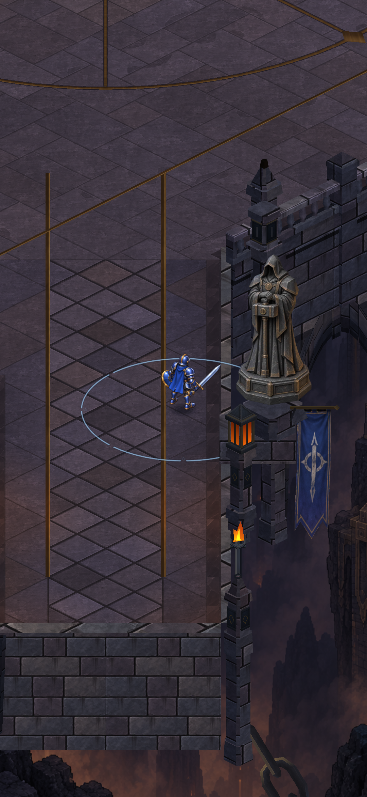
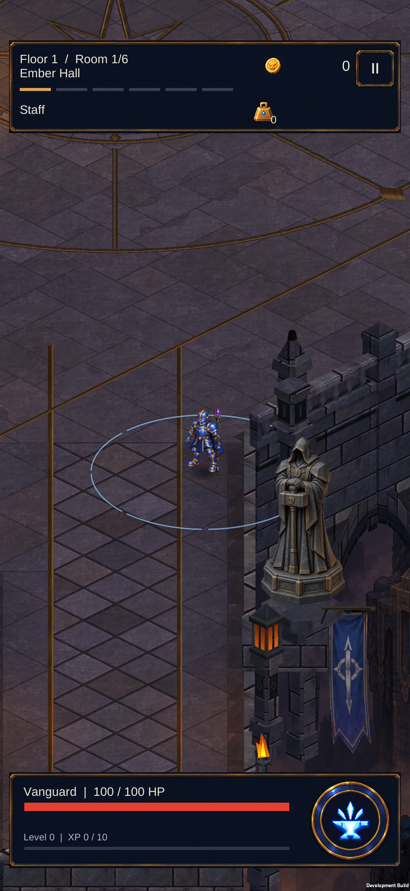
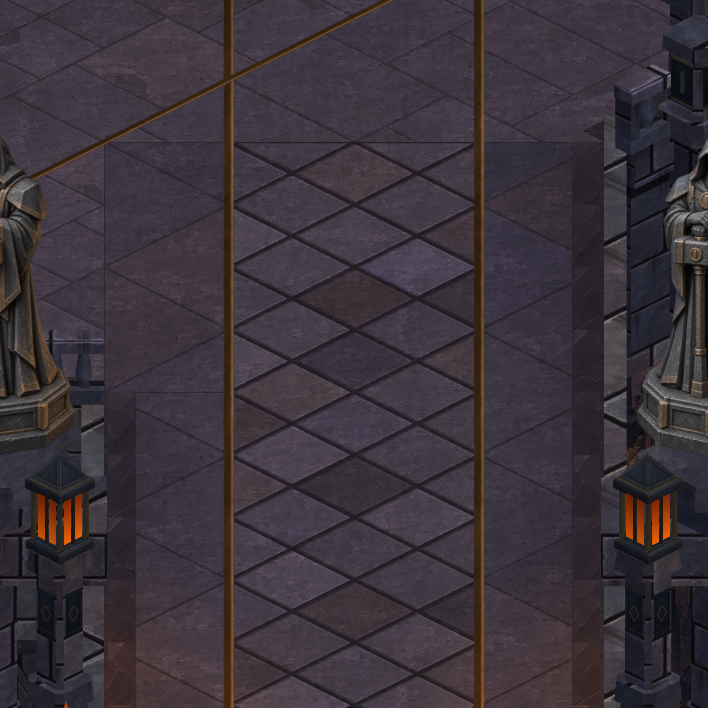

Cryptforge · 9 October 2026 · actual Unity comparison
A cleaner seat for the bridge keepers
The existing statues now sit on dressed octagonal mounting slabs. Shorter diamond tips and a continuous stone surface improve the join while keeping the original support bounds.
Installed · S23 seating review complete

Before — narrow tapered cap and exposed corners
After — broader seat and clipped diamond tips
Right-side approach: the full statue base and its mounting slab are visible.
The comparisons above are matched Unity captures with the HUD hidden and the hero staged at validated walkable points. The left-side view deliberately shows the existing hero cutaway. Actual phone evidence appears below.
24 renderers · 100,572 vertices — unchanged renderer count, 24 additional vertices across the two seats. Statue artwork, banners, lower consoles and gameplay remain unchanged. This is a small integration improvement.

Actual S23 — targeted right-keeper approach. Statue/base contact, new slab, banner and hero reviewed; no floating join or clipping observed.
Combined package verified: 395 .NET · 415 EditMode · 151 PlayMode tests passed, Android build exit 0, static integrity 561 / 1,099 / 568. Installed APK hash and verification scope are recorded in the review notes.
The separate normal Staff combat check passed. Profile, backup and original development flags remained identical; diagnostic flags were removed and the app stopped. The first unsuccessful keeper route is excluded. This is not a sustained-combat or midrange performance benchmark.
Additional framing record
The square view crops both keepers at the edges. Retained for completeness; the portrait comparisons above are the useful seating evidence.
Before — cropped framing
After — cropped framing